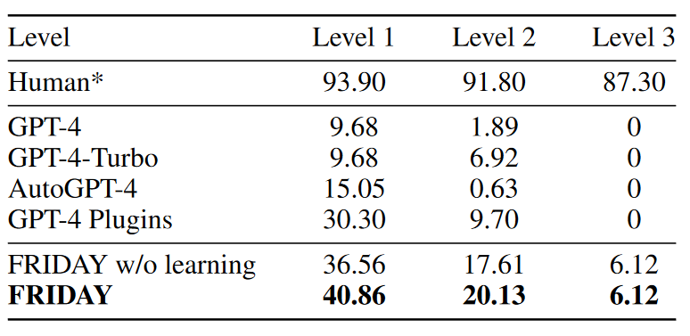

Experiments
Main Results
We evaluate FRIDAY on GAIA, a benchmark for general AI assistants featuring 466 carefully crafted real-world and challenging question-answering tasks. To solve tasks in GAIA, language agents need to browse the web, handle multi-modality, manipulate files, and reason over multiple steps to get answers.

Evaluation Results: * denotes results averaged across the dev and test sets, while the remaining results are sourced from the GAIA leaderboard, which exclusively focuses on the private test set.
Scores (%) of FRIDAY on level-1 tasks per capability.Numbers except FRIDAY are sourced from GAIA paper. As confirmed by GAIA’s authors, there are some numerical errors in GAIA’s Figure 5, so we omit the comparison with baselines here.
Self-directed Learning
We perform quantitative and qualitative evaluations to analysis FRIDAY’s self-directed learning capability.
QUANTITATIVE ANALYSIS
To showcase FRIDAY’s ability to master unfamiliar applications through self-learning, we conduct experiments on the SheetCopilot-20 dataset.This dataset includes 20 spreadsheet control tasks, covering various operations such as Formatting, Management, Charts, Pivot Tables, and Formulas, representing typical use cases of spreadsheets.
Comparison of different agents on the SheetCopilot-20 dataset.Pass@1 refers to the pass rate with each task being performed only once.We highlight the best results in bold.
QUALITATIVE ANALYSIS
In our qualitative analysis, we design a task to create a PowerPoint slide to introduce OS-Copilot. The specific content, font, font size, and other details required for the slide are elaborately described in the task instruction.
As shown in the following image, without self-directed learning, FRIDAY struggles to effectively control font types, sizes, and the positioning and sizing of inserted images:
FRIDAY w/o self-directed learning.
Nevertheless, following a period of self-directed learning, FRIDAY acquires various text box configuration tools, such as changing the text color, adjusting the font size of slide text, and modifying the line spacing of body text in PowerPoint presentations:
FRIDAY after learning text box control.
Further exploration leads FRIDAY to learn how to adjust the size and position of inserted images, ultimately successfully completing the task:

FRIDAY after mastering image insertion.